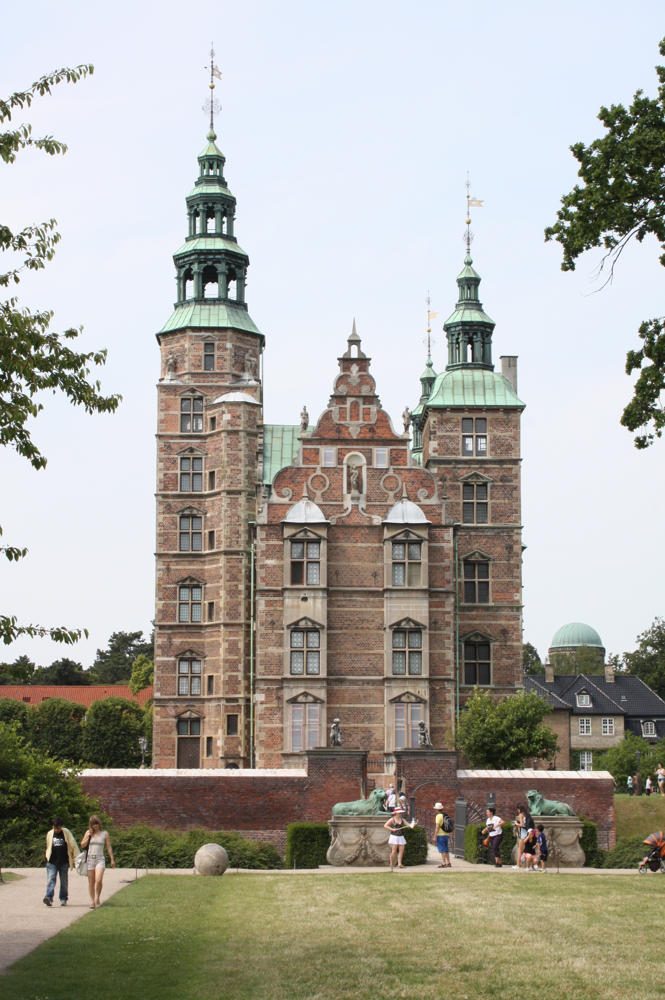

Dresden
Dresden, ibu kota negara bagian Saxony di Jerman, adalah kota yang dikenal dengan keindahan arsitektur baroknya dan sejarahnya yang kaya. Kota ini terletak di tepi Sungai Elbe dan sering disebut sebagai "Florence di Elbe" karena keindahan artistik serta budayanya yang luar biasa.
Salah satu daya tarik utama Dresden adalah Zwinger Palace, kompleks istana megah yang menampilkan museum seni kelas dunia, termasuk koleksi lukisan dari Old Masters. Selain itu, Frauenkirche, gereja bergaya barok yang hancur akibat Perang Dunia II dan direkonstruksi kembali, menjadi simbol rekonsiliasi dan perdamaian.
Pengunjung juga dapat menjelajahi Semperoper, opera house bersejarah, serta Brühl’s Terrace, area indah yang sering disebut sebagai "Balkon Eropa." Dresden menawarkan pengalaman yang tak terlupakan bagi pecinta sejarah, seni, dan keindahan kota klasik Eropa.
Royal Palace of La Almudaina
Royal Palace of La Almudaina adalah istana megah yang terletak di Palma de Mallorca, Spanyol. Bangunan ini merupakan salah satu simbol sejarah dan kekuasaan di Kepulauan Balearic. Awalnya dibangun sebagai benteng Muslim pada abad ke-10, istana ini kemudian diubah menjadi kediaman resmi keluarga kerajaan Spanyol setelah penaklukan oleh Raja James I dari Aragon pada abad ke-13.
Dengan arsitektur yang menggabungkan gaya Gotik dan Moor, istana ini menawarkan pemandangan spektakuler ke Laut Mediterania serta interior yang dipenuhi dengan perabotan bersejarah, lukisan, dan permadani kerajaan. Saat ini, Royal Palace of La Almudaina masih digunakan untuk acara resmi kerajaan, sekaligus menjadi destinasi wisata yang menarik bagi pengunjung yang ingin menjelajahi sejarah Spanyol.
Maria-Theresien-Platz
Maria-Theresien-Platz adalah salah satu alun-alun paling terkenal di Wina, Austria, yang dikelilingi oleh dua bangunan museum megah, yaitu Kunsthistorisches Museum (Museum Sejarah Seni) dan Naturhistorisches Museum (Museum Sejarah Alam). Dibangun pada abad ke-19, alun-alun ini menampilkan arsitektur khas era Habsburg yang mewah dan elegan.
Di tengah alun-alun, berdiri monumen Ratu Maria Theresa, yang merupakan salah satu tokoh paling berpengaruh dalam sejarah Austria. Area ini juga dikelilingi taman yang tertata rapi, menjadikannya tempat ideal bagi wisatawan dan penduduk lokal untuk bersantai, berfoto, atau menikmati atmosfer khas Wina.
Vézelay
Vézelay adalah sebuah desa kecil yang terletak di wilayah Bourgogne-Franche-Comté, Prancis. Desa ini terkenal dengan keindahan arsitektur abad pertengahannya serta sebagai situs Warisan Dunia UNESCO.
Daya tarik utama di Vézelay adalah Basilique Sainte-Marie-Madeleine, sebuah basilika Romawi yang menjadi tujuan utama para peziarah sejak Abad Pertengahan. Gereja ini memiliki arsitektur yang menakjubkan dengan ukiran detail di pintu masuknya serta interior yang memberikan suasana sakral dan megah.
Selain basilika, pengunjung dapat menikmati suasana desa yang tenang dengan rumah-rumah batu yang indah, jalanan berbatu yang khas, serta pemandangan lembah Sungai Cure yang memukau. Vézelay juga menjadi titik awal salah satu rute menuju Santiago de Compostela, menjadikannya tempat penting bagi para peziarah Katolik.
Dengan pesona sejarah, arsitektur klasik, dan pemandangan yang luar biasa, Vézelay adalah destinasi yang sempurna bagi pencinta sejarah, budaya, dan ketenangan.

Rosenborg Castle
Rosenborg Castle adalah sebuah kastil bersejarah yang terletak di Kopenhagen, Denmark. Dibangun pada awal abad ke-17 oleh Raja Christian IV, kastil ini merupakan contoh arsitektur Renaisans yang megah. Saat ini, Rosenborg Castle menjadi museum yang menyimpan koleksi kerajaan, termasuk perhiasan mahkota Denmark dan artefak bersejarah lainnya.
Dikelilingi oleh King's Garden yang indah, tempat ini menjadi destinasi wisata populer bagi pengunjung yang ingin menikmati sejarah, seni, dan keindahan taman di sekitarnya.